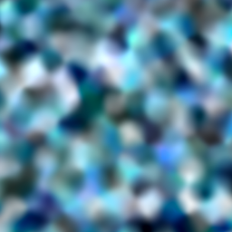

Table of Contents
FsMap3 Editor is a Windows GUI for creating and exploring procedural textures. Texture descriptions can be edited, loaded and saved, exported as images, randomized, mutated and evolved. This user guide helps you get started.
At the time of this writing FsMap3 is considered to be in alpha, which means that things are still changing rapidly. Backward compatibility of saved textures is not guaranteed until we move to beta.
Procedural textures are images created by an algorithm from a simple description. The textures in FsMap3 are 3-dimensional. 3-textures are also called solid textures because they can be likened to solid slabs of material.
Because solid textures have a color everywhere in 3-space, they can texture any object, no matter how complicated its surface. For example, a statue sculpted from marble shows a marble texture in its surface. As the sculptor chips away at the stone, the texture always maintains its general marble-like form, as the visible part is just the surface of something that is solid.
Technically, a 3-texture is a box that accepts 3 numbers (X, Y and Z), processes them somehow, and cranks out another 3 numbers. The numbers that come out of the box can be interpreted as a color (for instance, in RGB format) and displayed, or they can be interpreted as another set of coordinates and forwarded to some other box for further processing.
These boxes are typically called nodes in texture editors. A complete procedural texture is built by connecting several nodes in a tree or graph.
Here are some example images. Each image is a 2-dimensional cross section of a 3-texture created with FsMap3.
|
|
|
Below is an example screenshot with the main sections delineated.

The user interface is divided horizontally into three parts: parameters, control panel, and texture view.
The parameter panel contains all parameters of the texture under view. Together, the parameters completely define what the texture looks like. They are divided into three parts:
Palette defines the color scheme of the texture. At each point in space, the final 3 values that emerge from the texture are colored according to the palette.
Global parameters consists of just the layout for now. In the future, other parameters may be added. The layout determines how the texture tiles: not at all, along all axes, or only along X or Y axis.
Node tree contains the meat of the texture definition. There are four types of nodes:
Binary nodes have two child branches, which are somehow combined. For example, the first child could be layered over the second child.
Unary nodes have a single child, which they modify. For example, the output from the child could be overdriven, effecting a contrasty and saturated look when viewed in color.
Bases are leaves of the node tree. They produce the basic texture content that is modified and combined. In the example screenshot, the whole tree consists of just one basis node containing Perlin noise. You may be familiar with its look in the texture view on the right.
Fractalizers, finally, are special nodes that take many basis samples and combine them. They are called fractalizers because, typically, samples are taken at different frequencies in a geometric progression. When combined, the result has fractal-like qualities because the same general look occurs at many scales.
The parameter panel can be resized by dragging the faintly gray vertical divider at the left of the control panel. If you are not interested in parameters, you can minimize the parameter panel by moving the divider all the way to the left.
From top to bottom:
Randomize All creates random textures in all visible views. The view coordinates and zoom are reset.
Mutation mode influences what kind of modifications are made when mutating a texture.
Default layout mode determines the layout mode chosen for random textures. Set this appropriately for the kind of textures you want to create. This setting has no influence on already created textures. (For those, you can simply change the layout parameter in the parameter panel.)
View Modes. This setting selects how the view panel is arranged. At the moment, there are three distinct view modes. When switching a mode, if there is a view in focus, it will be copied to the new mode.
Big View: There is one big view. The mutate tool is not available in this mode.
Quad View: There is a 2-by-2 grid of small views. Each view can be edited independently. The main attraction of this mode is interactive evolution: With the mutate tool, choose your favorite texture. The other 3 are then created as its variations. If one of them looks nicer than the original, choose it.
Mosaic View: The mosaic view is experimental. Its goal is to convey information about a large number of parameter settings at once. There is a 4-by-4 grid of small views. The views are independently editable but they are also offset from each other so that if the textures are identical, they form one big picture. The mutate tool works differently in this mode: besides making a few categorical changes, it attempts to mutate continuous parameters in gradients running from the top left to the bottom right view.
Tools are for working with texture views. Inside views the left mouse button operates tools, while the right mouse button opens a context menu.
Pan Tool. To pan around, drag the view. Use the mouse wheel to control the Z coordinate.
Pan-Zoom Tool. To pan around, drag the view. Mouse wheel controls zoom: roll up to zoom in, down to zoom out.
Zoom Tool. Select the center of the area you want to zoom into and drag to choose the size of the area. Mouse wheel controls the Z coordinate.
Mutate Tool. The mutate tool can be used in quad and mosaic views. Clicking on a view, mutated copies of it appear in the other views. Keep clicking on your favorite and it will (hopefully) evolve into something super impressive.
Jolt Tool. Click on a view to mutate it according to the current mutation mode.
View Coordinates. At the bottom of the control panel is the view info box where the coordinates of the view in focus are displayed. A view always shows a square slice of the texture in the XY plane, with positive X pointing right, positive Y pointing down, and Z being constant. The Z axis is depth and increases toward the screen.
The textures are displayed here. Any change to the parameters of a texture triggers an immediate re-render. Here, the left mouse button operates the current tool. The right mouse button accesses the context menu:
FsMap3 comes equipped with a wide assortment of 3-bases.
| Perlin noise | Perlin noise, as many other noise bases, emulates band-limited noise. This version has unconstrainted gradients and a selectable interpolation fade. | |
| cubex noise | Cubex noise is similar to Perlin noise. It is slower to calculate but has more options. | |
| weave | Weave is special in that, fow now, it is the only 3-basis designed to look 2-dimensional, specifically, a woven or threaded pattern. | |
|  | radial value noise | Radial value noise is yet another noise-like basis. Unlike the others, its features are points, not gradients. The points are distance weighted. |
| leopard | The leopard basis is a bunch of spots mixed together. | |
| Worley | The Worley basis outputs processed distances to nearest feature points. This version is specially adapted to produce 3-dimensional results. The distance metric is selectable. | |
| colored Worley | A colored version of the Worley basis. The output is colored according to the nearest cell. | |
| peacock | The peacock basis is like the leopard basis except the spots are now randomly oriented shapes called potentials. | |
| Julia | The Julia basis turns some well-known fractal iteration formulas into a tileable 3-texture form. | |
 |
Julia orbit trap | Julia orbit trap basis. Like the Julia basis but the coloring is done with the orbit trap technique, utilizing a separate orbit texture that we call atlas. |
| capsule flow | Capsule flow. The flow bases distributes oriented potentials like the Peacock basis. However, in the flow bases the orientation is sampled from a separate flow basis. The capsule flow basis consists of oriented capsules. | |
| potential flow | The potential flow basis consists of shapes oriented according to the flow basis. |